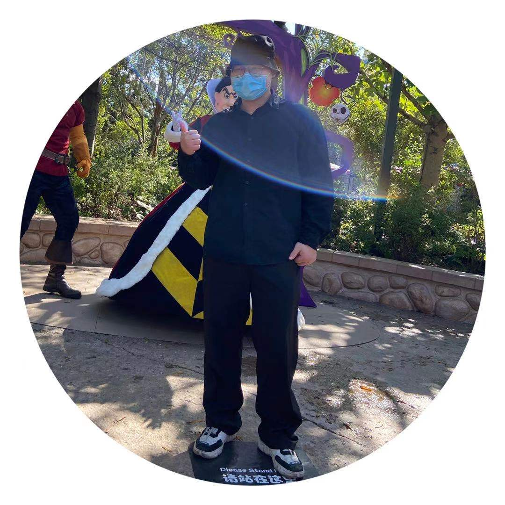

|
Weijia Wu
I am a Doctor of Philosophy (PhD) student, focusing on Computer Vision and Deep Learning,
at Zhejiang University, China.
My supervisor is Hong Zhou.
Top-venue Conference publications (July 2021):
1xNeurIPS, 1xACCV.
Email /
Google Scholar /
GitHub /
Homepage for My Works /
|

|
|
Research Interests
My research focus is broadly centered around scene text detection and recognition, video-and-language tasks(text-based video retrieval, video text tracking and spotting,
text-based visual question answering).
Notes:
|
|
Recent Updates
[March 2022]:Serve as a reviewer for ICML2022.
New!! [July 2021]: One paper got accepted in NeurIPS 2021!!
[June 2021]:Serve as a reviewer for NeurIPS2021.
|
|
Experience
[January 2021 - January 2022]:Research Intern at MMU, KuaiShou, led by Debing Zhang
|
|
Academic Service
Conference Review
International Conference on Machine Learning(ICML), 2022.
Neural Information Processing Systems(NeurIPS), 2022.
Neural Information Processing Systems(NeurIPS), 2021.
Journal Review
|
|
|
A Bilingual, Open World Video Text Dataset and End-to-end Video Text Spotter with Transformer
Weijia Wu, Yuanqiang Cai, Debing Zhang, Jiahong Li
Hong Zhou .
NeurIPS 2021 Track on Datasets and Benchmarks (NeurIPS),
2021 (New!)
Abstract /
arXiv /
Homepage /
BibTex /
GitHub/
Demo /
Media Report
Most existing video text spotting benchmarks focus on evaluating a single language and scenario with limited data. In this work, we introduce a large-scale, Bilingual, Open World Video text benchmark dataset(BOVText). There are four features for BOVText. Firstly, we provide 2,000+ videos with more than 1,750,000+ frames, 25 times larger than the existing largest dataset with incidental text in videos. Secondly, our dataset covers 30+ open categories with a wide selection of various scenarios, e.g., Life Vlog, Driving, Movie, etc. Thirdly, abundant text types annotation (i.e., title, caption or scene text) are provided for the different representational meanings in video. Fourthly, the BOVText provides bilingual text annotation to promote multiple cultures live and communication. Besides, we propose an end-to-end video text spotting framework with Transformer, termed TransVTSpotter, which solves the multi-orient text spotting in video with a simple, but efficient attention-based query-key mechanism. It applies object features from the previous frame as a tracking query for the current frame and introduces a rotation angle prediction to fit the multiorient text instance. On ICDAR2015(video), TransVTSpotter achieves the state-of-the-art performance with 44.1% MOTA, 9 fps.
@InProceedings{wu2021opentext,
author = {Weijia Wu, Debing Zhang, Yuanqiang Cai, Sibo Wang, Jiahong Li, Zhuang Li, Yejun Tang, Hong Zhou},
title = {A Bilingual, OpenWorld Video Text Dataset and End-to-end Video Text Spotter with Transformer},
booktitle = {35th Conference on Neural Information Processing Systems (NeurIPS 2021) Track on Datasets and Benchmarks},
year = {2021}
}
|
|
|
Synthetic-to-Real Unsupervised Domain Adaptation for Scene Text Detection in the Wild
Weijia Wu, Ning Lu, Enze Xie,
Hong Zhou .
Proceedings of the Asian Conference on Computer Vision (ACCV),
2020.
Abstract /
arXiv /
BibTex
Deep learning-based scene text detection can achieve preferable performance, powered with sufficient labeled training data. However, manual labeling is time consuming and laborious. At the extreme, the corresponding annotated data are unavailable. Exploiting synthetic data is a very promising solution except for domain distribution mismatches between synthetic datasets and real datasets. To address the severe domain distribution mismatch, we propose a synthetic-to-real domain adaptation method for scene text detection, which transfers knowledge from synthetic data (source domain) to real data (target domain). In this paper, a text self-training (TST) method and adversarial text instance alignment (ATA) for domain adaptive scene text detection are introduced. ATA helps the network learn domain-invariant features by training a domain classifier in an adversarial manner. TST diminishes the adverse effects of false positives~(FPs) and false negatives~(FNs) from inaccurate pseudo-labels. Two components have positive effects on improving the performance of scene text detectors when adapting from synthetic-to-real scenes. We evaluate the proposed method by transferring from SynthText, VISD to ICDAR2015, ICDAR2013. The results demonstrate the effectiveness of the proposed method with up to 10% improvement, which has important exploration significance for domain adaptive scene text detection.
@InProceedings{wu2020synthetic,
author = {Wu, Weijia and Lu, Ning and Xie, Enze and Wang, Yuxing and Yu, Wenwen and Yang, Cheng and Zhou, Hong},
title = {Synthetic-to-Real Unsupervised Domain Adaptation for Scene Text Detection in the Wild},
booktitle = {Proceedings of the Asian Conference on Computer Vision (ACCV)},
year = {2020}
}
|

|
|
{kind=link}